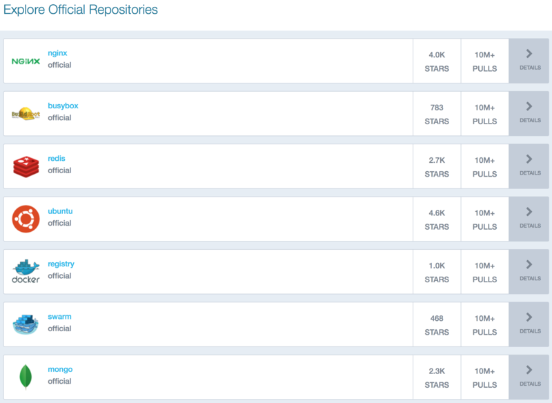
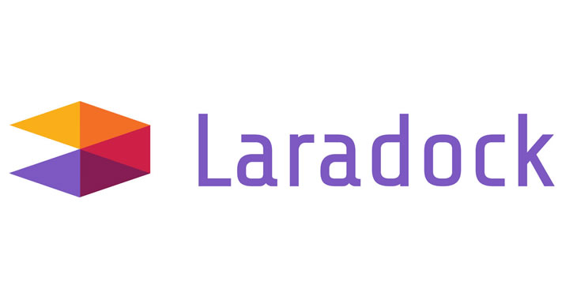

O que é Docker?
Container Docker

Imagem Docker
Docker Vs VMs

Para que e por que usar?
- Padronização
- Compartinhamento
- Testes
- Fix de bugs
- Deploy simplificado
Docker Compose

Como usar?
Instalação
Configurações adicionais
Commandos básicos
docker-compose up
docker-compose down
docker-compose start
docker-compose stop
docker-compose restart
docker-compose ps
docker-compose images
Laradock
Modos de usar
- Projeto Único
- Múltiplos Projetos
Implementação
1 - Clone Laradock inside your PHP project:
git clone https://github.com/Laradock/laradock.git
Implementação
2 - Enter the laradock folder and rename env-example to .env.
cp env-example .env
Implementação
3 - Open your laradock’s .env file and set the following.
MYSQL_VERSION=5.7
Implementação
4 - Run your containers:
docker-compose up -d nginx mysql
Implementação
Open your browser and visit localhost: http://localhost.
That's it! enjoy :)